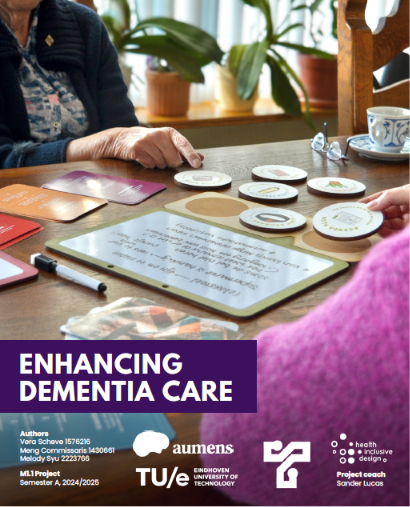

T-Doos
U&S | T&R | C&A | B&E
A design project on how to enhance dementia care for care givers. Following an iterative design process, a toolbox was developed that helps care givers understand different type of innovative tools for people with dementia and start a conversation with their clients on which tools could support them in having a better quality of live.